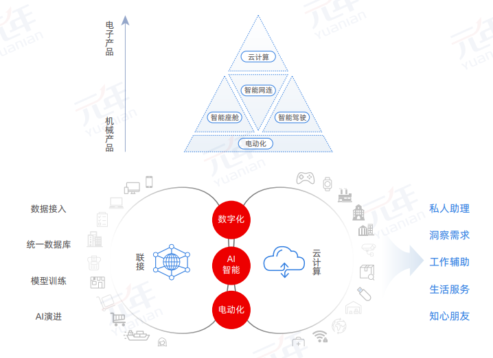

研发数字化，具体来说包含两个部分，一是研发管理数字化，二是研发产品数字化。随着用户的变化、技术的发展，企业要求研发端有更高的效率和效益；同时，用户对产品和服务的需求在不断迭代变化，推动企业开发出更丰富的数字化产品和服务。
研发数字化的典型实践：比亚迪VS特斯拉

研发数字化带来四大提升
适配变化的研发转型需求
电动化、网联化、智能化已成为汽车产业的发展潮流和趋势，与传统的汽车相比，电动车、智能车在相同的车内空间增加了传感器、电子、配电系统等多种配件，需要千兆级别的数据量传输，新的电子电气架构，超过 1 亿行的软件代码，以及更高的电力需求。所有这些都要求企业从系统层面统筹规划，实现机、电、软、控制等多领域跨学科集成和数据的统一管理和传输，利用雷达和摄像技术实现主动安全，通过数字化虚拟验证、电子电气架构数字化模型、虚拟化仿真验证，实现基于需求、功能、逻辑以及物理的研发全过程数字孪生。
实现敏捷研发
研发数字化要求企业广泛应用数字孪生、数字化仿真技术，这些技术在不断演进的过程中，表现出跨产品生命周期、从静态到动态、人工智能驱动、算力需求暴增的特征，开辟车企数字化研发新业态，可利用数据和模型缩短决策链，大幅缩短产品研发周期和产品后期设计修改周期，优化研发流程，围绕用户不断变化的需求迅速进行研发的支持和响应，加快产品研发速度和质量。
实现产品全生命周期管理
研发数字化不是孤立系统，将与企业其他价值链环节，如生产、供应链、营销、服务等数字化系统进行连接。基于PLM平台和以ERP为核心的产供销服资源管理平台，企业可打通全价值链业财数据，连接上下游伙伴、用户和资源，实现研发、生产、销售、服务一体化应用。
重新定义产品和服务，推动商业模式创新
相比传统汽车, 未来汽车在研发中关注的焦点更多集中在软件方面，比如手机APP、自动驾驶、数字化座舱、车联网等等。车企获得竞争力的核心不再只是“造好车”，而是“用好车”；产品研发不再只是研发汽车整车本身，还包括数字化产品和服务的创新，形成更丰富的车内数字化产品和车辆应用服务，拓宽企业盈利空间，形成人、车、生活连为一体的全新且丰富的生态圈产品和服务，实现商业模式创新。
研发数字化的三大关键
研发数字化的实现有三大关键：一是做好需求管理，识别有价值的需求；二是建立并不断迭代优化产品研发体系；三是建立高效的协同研发环境。
以用户为中心的价值拉动
研发是为了给用户提供更好的服务和体验。因此，研发首先要以用户为中心，基于平台与用户产生交互，获得用户需求、体验等相关数据，对需求进行分类、筛选、挖掘和管理，根据多数用户的需求和优先级进行统筹规划，确定每一次产品迭代升级的需求，准确定义产品。
建立并不断迭代优化产品研发体系
在数字化、智能化大潮下，软件不止定义汽车，软件定义一切。数字化产品、智能服务已波及各行各业，这就要求企业在研发时必须考虑如何把经典的传统需求和新时代下的数字化需求整合在一起。
因此，研发模式由于用户需求的不断转变也发生了巨大变化。这就要求企业不断迭代研发体系，优化组织和流程，实行动态敏捷的产品研发管理，基于快速的研发支撑产品的快速迭代，满足甚至是创造和引领不断变化的用户需求。
建立高效的协同研发环境
协同研发已成为企业研发的常态。 基于与用户间的直接连接，协同的对象已经从内部延展到外部，这尤其需要企业建立数字化协同研发体系，建立产品开发过程协同管理机制，以实现分布式环境中开发人员项目协同、全生命周期产品开发协同和产品开发过程信息的协同，从而实现精准高效的研发协同。